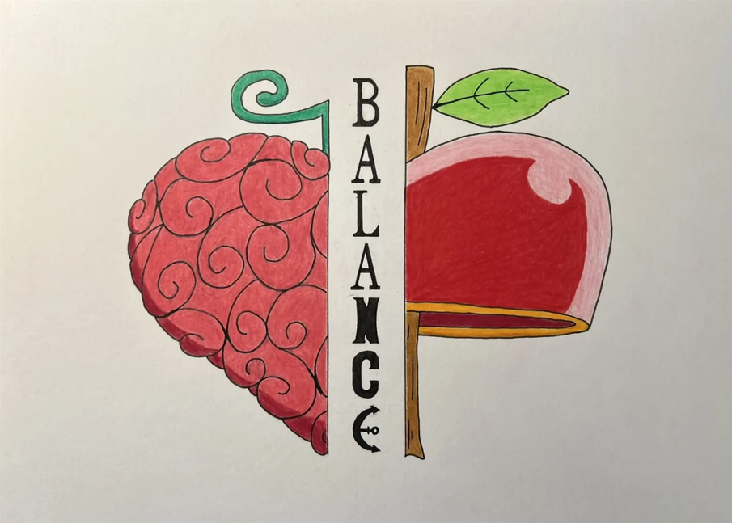

2025 | Farbstifte auf Papier | DIN A4 Querformat
Es ist nicht immer leicht, die richtige Balance zwischen Herz und Verstand zu finden. Oft weiß der Kopf
schon, was das Herz noch nicht fühlen kann. Und manchmal fühlt das Herz längst, was der Kopf noch nicht wahrhaben möchte.
Beide wollen uns schützen. Der Kopf sucht nach Kontrolle, nach Gründen, nach Sicherheit. Das Herz dagegen erinnert uns daran,
was uns berührt, was uns fehlt und wonach wir uns sehnen.
"Hörn auf dein Herz" klingt einfach, ist es manchmal aber nicht, wenn die Gedanken zu laut sind. Vielleicht geht es
am Ende nicht darum, dass eines von beiden gewinnt. Sondern darum, zu lernen, beiden zuzuhören.